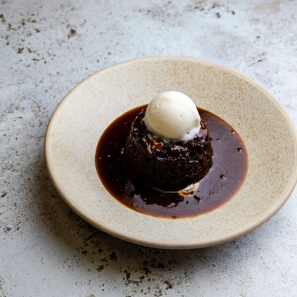

Sticky Date Pudding

Description
This rich, delicious, and luxurious dessert is a great comfort food on a cold winter's night.
Ingredients
- 1 cup flour
- 1 teaspoon baking powder
- 2 ½ ounces dark chocolate, grated
- 7 ounces chopped pitted dates
- 1 ¼ cups water
- 1 teaspoon baking soda
- ¼ cup softened butter
- ¾ cup superfine (castor) sugar
- 2 eggs
- 1 cup heavy cream
- 1 cup firmly packed brown sugar
- 1 cup butter
- 2 tablespoons confectioners' sugar for dusting
- 3 cups vanilla ice cream
Directions
- Preheat oven to 350 degrees F (175 degrees C). Grease a 12 cup muffin tin. Whisk together the flour, baking powder, and chocolate in a small bowl, and set aside.
- Bring the dates and water to a boil in a saucepan over high heat. Remove from the heat, and stir in the baking soda. Allow the mixture to stand for 5 minutes, then scrape into a blender, and carefully puree until smooth; set aside.
- Cream 1/4 cup of butter together with the superfine sugar until light and fluffy. Add the eggs one at a time, beating well between each addition. Fold in the flour mixture and the date puree until well blended. Spoon into the prepared muffin cups.
- Bake in the preheated oven for 25 minutes. Meanwhile, stir together the cream, brown sugar, and 1 cup of butter in a saucepan over medium-low heat until the butter melts; set aside.
- When the puddings have baked for 25 minutes, remove them from the oven, and cool in the pan for 10 minutes. Remove the puddings from the muffin tin, and place them onto a baking sheet. Spoon 2 tablespoons of the sauce over each pudding, then return to the oven and bake for 5 minutes more.
- To serve, spoon some of the sauce onto the bottom of a dessert plate, and place a pudding on top. Lightly dust with confectioners' sugar, and top with a 1/4 cup scoop of ice cream. Repeat with the remaining date puddings.
Home